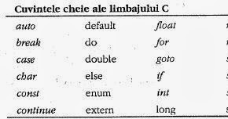
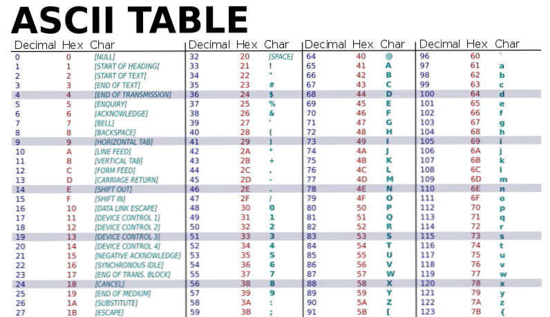
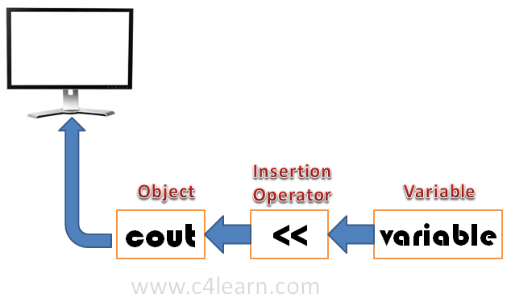
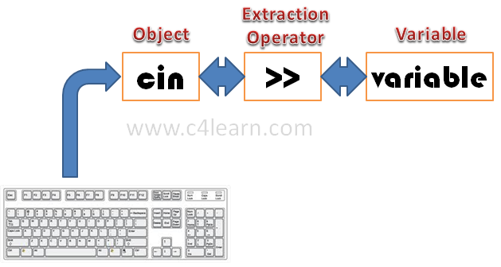
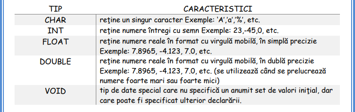
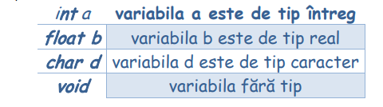
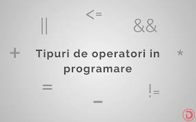
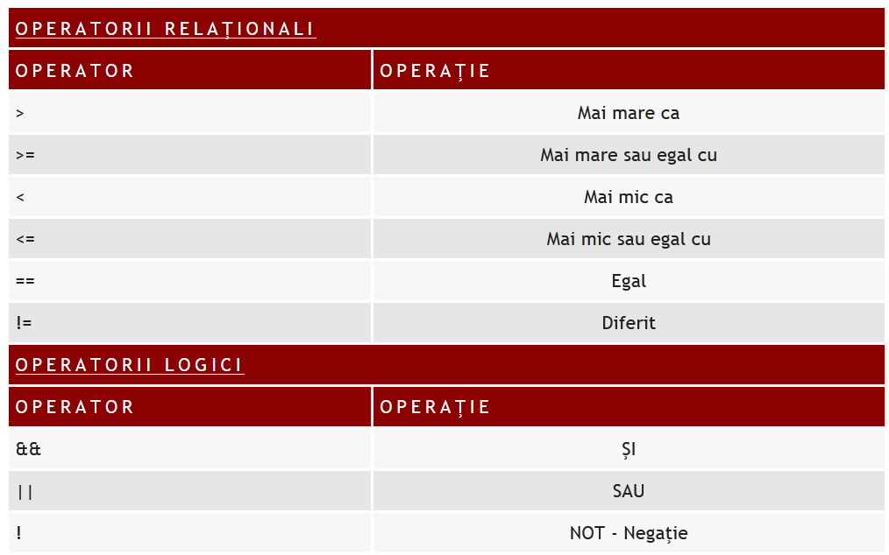
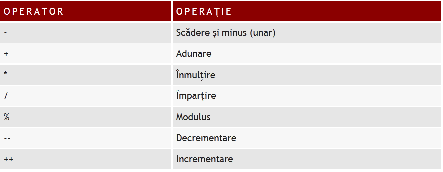

Setul de caractere reprezintă ansamblul de caractere cu ajutorul cărora se poate realiza un program C++. Acesta este alcătuit din:
- litere mari și mici ale alfabetului englez(A-Z,a-z);
- cifrele sistemului de numerație în baza 10(0-9);
- caractere speciale(+,-,/,=,%,<,>,:,;,#,$,@,blank(spațiu)).
| Identificatorul este o succesiune de litere, cifre sau caracterul special underscor(_) din care prima nu trebuie să fie cifră. Cu ajutorul identificatorilor se asociază nume constantelor,
variabilelor, funcțiilor, etc. Exemple de identificatori: a, c1, contor_cifre, etc.
Limbajul C++, ca orice limbaj de programare, este compus din câteva denumiri(identificatori) cu o semnificaţie bine stabilită, numite cuvinte cheie. |
 |
Un comentariu, în limbajul C++, începe cu semnul //comentariu - pentru a scrie un comentariu pe o singură linie – sau cu semnul /* comentariu */ - pentru a scrie un comentariu pe mai multe linii. Comentariile nu au niciun efect asupra comportamentului programului. Programatorul poate să le folosească pentru a include explicaţii scurte sau observaţii asupra codului sursă.
(American Standard Code for Information Interchange – Codul Standard American pentru Schimbul de Informații). Codul ASCII reprezintă un sistem de codificare a caracterelor, care are la bază alfabetul englez. Există 95 de caractere ASCII care pot fi imprimate, numerotate de la 32 la 126. Restul caracterelor sunt marcaje, cum ar fi NULL, TAB sau DEL. Pe scurt, fiecare caracter ce poate fi citit de la tastatură este codificat folosind ASCII pentru a avea un limbaj comun pe toate dispozitivele care se folosesc de informație. |
 |
Scrierea și citirea în C++
Pentru a realiza scrieri pe ecran se folosește fluxul cout<<. Cuvântul cheie cout este acronimul
de la console output și se mai numește - stream de ieșire. Forma generală a acestui stream este:cout<| Pentru a realiza citiri de la tastatură se folosește fluxul cin>>. Cuvântul cheie cin este
acronimul de la console input și se mai numește stream de intrare. Forma generală a acestui
stream este cin>>a>>b>>……>>n; | |
|  |  |
Tipuri de date
|  | Un tip de date specifică (precizează):
|
1)VARIABILE DECLARAREA VARIABILELORSintaxa: tip_dată nume; unde:•tip_dată precizează tipul datei memorate în variabila de memorie; •nume este identificatorul variabilei de memorie.Exemple:
|
2)CONSTANTESunt reprezentate tot printr-un caracter sau o insiruire de caractere alfanumerice, insa, spre deosebire de variabilele normale, acestea nu-si vor modifica valoarea pe parcursul intregului program. Constantele pot avea de asemenea valori intregi, reale, caracter, etc. DECLARAREA CONSTANTELORSintaxa: const [tip_dată] nume=valoare; unde: • const este un cuvânt cheie care înseamnă definirea unei constante simbolice; • tip_dată precizează tipul constante (poate lipsi); • nume este identificatorul constantei; • valoare este valoarea constantei.Exemple:
|
OPERATORII sunt caractere speciale care indică operaţia care se efectuează
în cadrul unui program.
Clasificarea operatorilor:
|
 |
|  |  |
EXPRESII  |
O expresie poate fi:
|